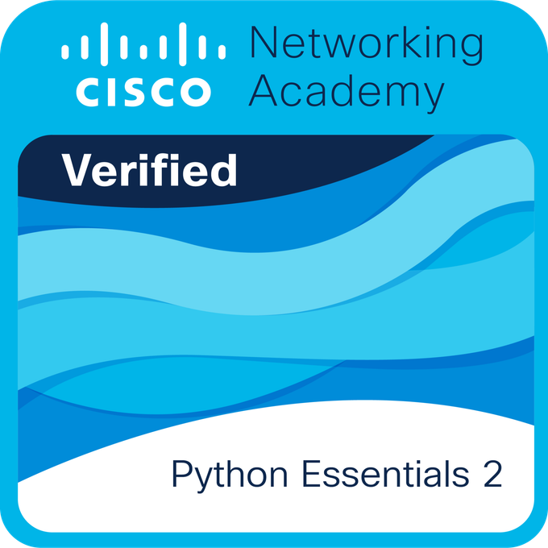
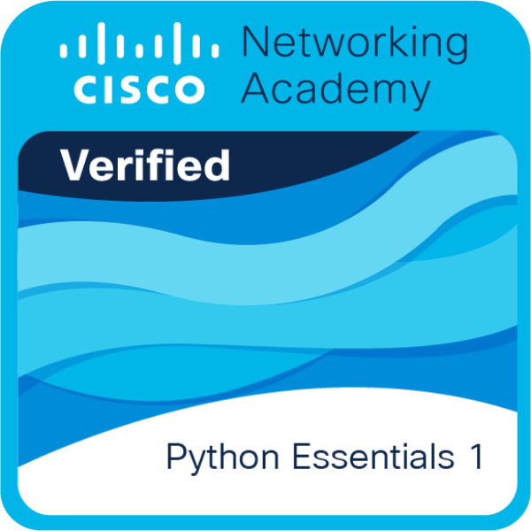

Perfil
Soy un desarrollador junior que comenzó con Python en 2024. Me enfoco en aprender creando: pequeños proyectos, experimentos con APIs y scripts que automatizan tareas.
Desarrollador Python
Creando, aprendiendo y automatizando — un proyecto a la vez.
Soy un desarrollador junior que comenzó con Python en 2024. Me enfoco en aprender creando: pequeños proyectos, experimentos con APIs y scripts que automatizan tareas.
Fortaleciendo bases: estructuras de datos, buenas prácticas, lectura de documentación, pruebas y organización del código.
Cuatro áreas donde ya tengo proyectos y certificaciones que lo demuestran.
Backends con Django y FastAPI, bases de datos SQL y APIs REST, de la idea al despliegue.
Prueba: TradeFlow Colón · API de Tareas
Limpieza de datos, dashboards en Excel y Power BI, y análisis con Pandas que terminan en decisiones.
Prueba: Excel Expert · Inventario y Abastecimiento
Integración de modelos de lenguaje en productos reales: asistentes con citas, búsqueda y analítica.
Prueba: Asistente de Documentos IA
Auditoría de código, manejo seguro de contraseñas y tests automáticos con integración continua.
Prueba: Bootcamp DOJO · Security Guard · Auditor de Contraseñas
Marketplace B2B para la Zona Libre de Colón: los compradores mayoristas descubren inventario verificado, los vendedores gestionan su tienda, planes SaaS y logística, y un panel de analítica con IA les da KPIs, pronósticos y un chat de consultas. Incluye panel de administración en React, app Android (TWA) y versión en inglés y español.
Auditor de seguridad para código, repositorios y sitios web: análisis estático con más de 25 patrones de vulnerabilidad, detección de secretos filtrados y revisión de dependencias con CVE conocidos, en un reporte priorizado.
Análisis de la cadena de suministro de una distribuidora ficticia: nivel de servicio, clasificación ABC-XYZ, desempeño de proveedores y plan de reposición con stock de seguridad y EOQ. Libro de Excel con LAMBDA y matrices dinámicas, e informe de Power BI con 83 medidas DAX.
Pregúntale a tus apuntes: un buscador BM25 encuentra los fragmentos relevantes y Claude responde citando la fuente exacta.
API REST con FastAPI y SQLite: filtros, paginación y estadísticas, con tests automáticos y CI en GitHub Actions.
Mide la fuerza de una contraseña y revisa si fue filtrada usando k-anonimato: la contraseña nunca sale de tu equipo.
Limpieza de datos, gráficos y un reporte automático sobre un año de ventas de una cadena ficticia de tiendas.
App web sin frameworks para registrar hábitos: rachas, mapa de calor de 12 semanas y exportar/importar datos.
Mapa mental interactivo sobre tecnologías de ondas: cada rama trae un experimento, desde el espectro electromagnético y AM/FM hasta radar, sonar y un medidor de decibeles.
Juego de lucha 2D multijugador local con 5 personajes, escudos con tiempo de recarga, proyectiles con física y selección de escenario en cada ronda.
Microsoft Office Specialist · Microsoft 365 Apps
Mayo 2026
Microsoft Office Specialist · Microsoft 365 Apps
Octubre 2025

Cisco Networking Academy
Noviembre 2026

Cisco Networking Academy
Agosto 2026
Fundación Comunidad DOJO · WoSec Panamá
Marzo 2026 · Bootcamp de 22 h
MoureDev · BIG school
Octubre 2025 · 6 h
Inglés · ETS
2024 · 2025
Cada etapa está respaldada por un proyecto o una certificación.
Si deseas ponerte en contacto, escríbeme por LinkedIn o GitHub. Abierto a colaborar y a retos interesantes.